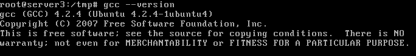
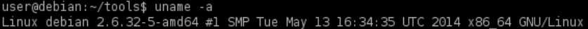
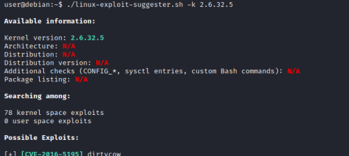

2. Kernel Exploits
Prerequisite:
One of the requirements, of course, is that GNU C/C++ Compiler is installed on the target.
We can determine this by simply running “gcc --version” on the target system.

Kernel
• Kernels are the core of any operating system.
• It as a layer between application software and the actual computer hardware.
• The kernel has complete control over the operating system.
• Exploiting a kernel vulnerability can result in execution as the root user.
• Warning: Kernel exploits can often be unstable and may be one-shot or cause a system crash
Kernel exploits
1. enumerate the kernel version
target@debian:~$ uname -a #system information

2. Search for a Kernel Exploit with: SearchSploit(ExploitDB), linux-exploit-suggester-2, Google, GitHub
◇ Use searchsploit → specific kernel version
attacker@kali:/# searchsploit linux kernel 2.6.32 privilege escalation
◇ Use searchsploit → specific distribution
attacker@kali:/# searchsploit linux kernel 2.6 priv esc debian
◇ use linux-exploit-suggester-suggester (bash version) to find exploits for a specific version of the kernel
attacker@kali:/# wget https://raw.githubusercontent.com/mzet-/linux-exploit-suggester/master/linux-exploit-suggester.sh
attacker@kali:/# chmod +x linux-exploit-suggester.sh
attacker@kali:/# ./linux-exploit-suggester.sh #Execute
attacker@kali:/# chmod +x linux-exploit-suggester.sh
attacker@kali:/# ./linux-exploit-suggester.sh #Execute

◇ use linux-exploit-suggester-2 (perl version) to find exploits for a specific version of the kernel
GitHub: https://github.com/jondonas/linux-exploit-suggester-2
Attacker machine
attacker@kali:/# wget https://raw.githubusercontent.com/jondonas/linux-exploit-suggester-2/master/linux-exploit-suggester-2.pl
attacker@kali:/# ./linux-exploit-suggester-2.pl -k <kernel-number>
attacker@kali:/# ./linux-exploit-suggester-2.pl -k <kernel-number>

◇ use Kernelpop(https://github.com/spencerdodd/kernelpop) to search Kernel vulnerability for Mac
3. Compile and Execute the Exploit
Bibliography:
• TCM Security: Linux Privilege Escalation for Beginners (https://academy.tcm-sec.com/p/linux-privilege-escalation)
• Tib3rius: Linux Privilege Escalation for OSCP & Beyond! (https://www.udemy.com/course/linux-privilege-escalation/)